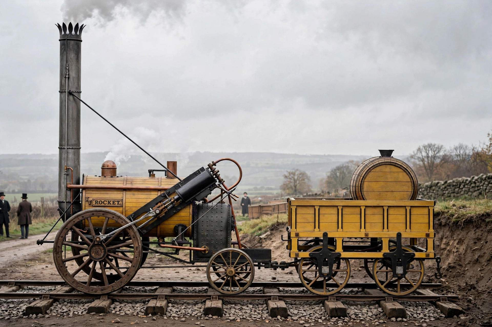

Stephenson's Rocket

| Rocket | |
|---|---|
| Designer | Robert Stephenson and Company |
| Build date | 1829 |
| Type | 0-2-2 steam locomotive |
| Famous event | Winner of the Rainhill Trials, 1829 |
| Preserved | Science Museum Group collection |
Stephenson's Rocket is an early steam locomotive of 0-2-2 wheel arrangement, designed by Robert Stephenson and built by Robert Stephenson and Company in Newcastle upon Tyne in 1829. It won the Rainhill Trials held by the Liverpool and Manchester Railway in October 1829.
Design
Rocket combined several innovations that became standard for steam locomotives: a multi-tubular boiler giving a large heating surface and strong draught; a separate firebox; a blastpipe directing exhaust steam up the chimney to draw the fire; and cylinders connected directly to the driving wheels, set at an angle (later made horizontal). These features gave it a decisive speed and efficiency advantage over rivals at Rainhill, where it reached speeds of up to about 30 mph (48 km/h).
Career
After the trials, Rocket worked on the Liverpool and Manchester Railway following its opening in 1830 — the opening day on which the MP William Huskisson was fatally injured by the locomotive. It was subsequently rebuilt, with cylinders lowered to horizontal, and served in humbler duties before being donated to the Patent Museum in London in 1862.
Preservation and replicas
The original survives in the collection of the Science Museum Group, displayed for many years at the Science Museum in London and later lent to other museums including the National Railway Museum in York and the Science and Industry Museum in Manchester. A working replica was built in 1979 for the 150th anniversary of the trials.